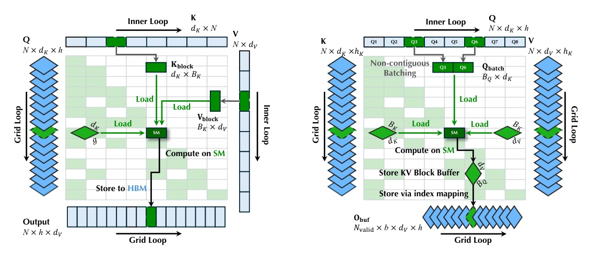
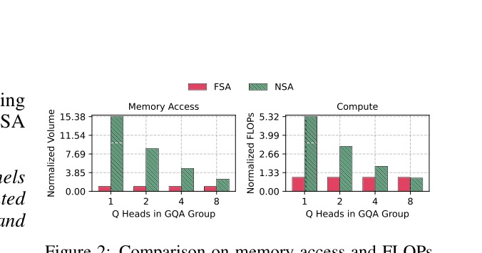
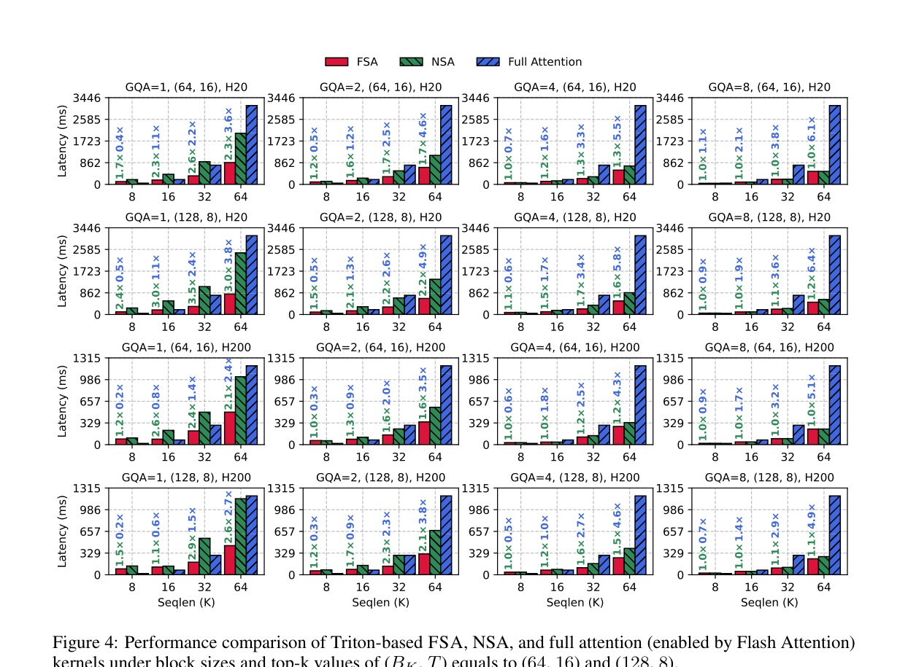
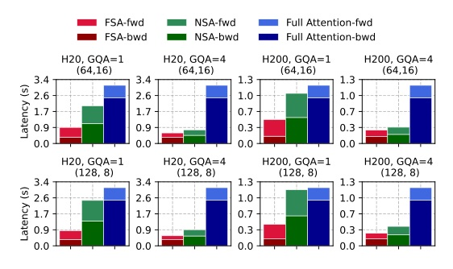
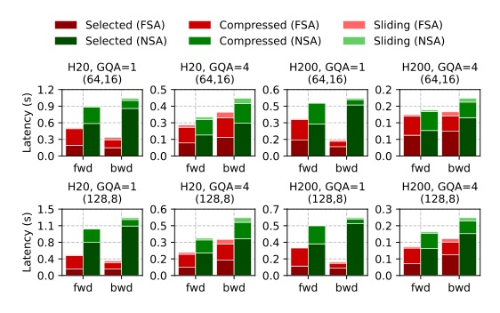
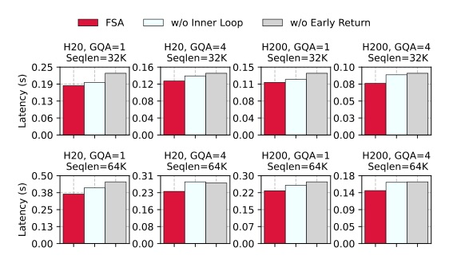

Flip the kernel loop order, not the sparse-attention algorithm.
Full paper title: FSA: An Alternative Efficient Implementation of Native Sparse Attention Kernel
FSA makes NSA fast for small GQA groups by batching query tokens per KV block instead of padding query heads.



| Comparison | H20 | H200 | Where it grows |
|---|---|---|---|
| FSA vs NSA | up to 3.5x; mean 1.8x | up to 2.9x; mean 1.4x | small GQA, longer sequences |
| FSA vs full attention | up to 6.4x; mean 2.4x | up to 4.9x; mean 2.3x | larger GQA, 64K |
| Comparison | Max speedup | Mean speedup | Observation |
|---|---|---|---|
| FSA vs NSA | 1.25x | 1.09x | consistent lower training latency |
| FSA vs full attention | 2.47x | 1.86x | larger gain at long sequences / H200 |
FSA wins because it attacks the dominant selected-token bottleneck, where sparse attention meets the GPU most badly.



| Removed component | Worst slowdown | Mean slowdown |
|---|---|---|
| Inner-loop batching | 18.9% | 11.9% |
| Early return | 25.2% | 18.2% |
“FSA exchanges NSA kernel loop order and processes query heads one by one, looping over KV blocks in the outer loop and batches of query tokens in the inner loop.”
FSA 交換 NSA kernel 的迴圈順序：外層走 KV blocks，內層才批次處理 query tokens。§3.1 p.4
“the token selection phase dominates overall attention computation performance, accounting for up to 79% and on average 65% of total attention overhead.”
token selection 是主要瓶頸：最高佔 79%，平均佔 65% 的 attention overhead。§4.4 p.9
“FSA trades lowered memory access volume and FLOPs with non-contiguous loading and more buffer overhead.”
FSA 用較少 memory access 與 FLOPs，交換 non-contiguous loading 和額外 buffer 成本。Appendix E p.17
FSA shows how a kernel-level schedule can unlock existing long-context sparsity for the GQA configurations modern LLMs actually use.